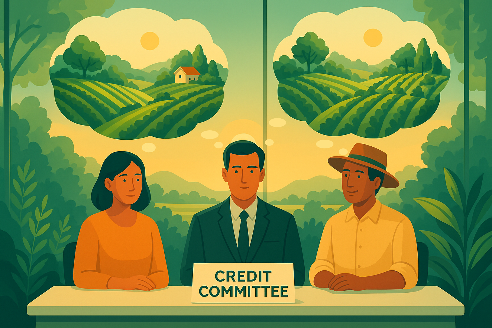

<title>Ecosystem Equity | Insight</title>
<meta name="description" content="Ecosystem Equity identified how rebalancing credit agreements could link
 finance with restoration.">


<section id="insight">
  <h2>Insight</h2>

  <p>
    Conventional economic models often treat money as neutral: it moves prices but does not determine real activity.
    Credit, if considered at all, is usually described as a secondary friction rather than as something central.
  </p>

  <p>
    Yet in practice, credit operates as a de facto licence.
    Access to credit decides which projects are resourced and go ahead. 
    In that sense, credit criteria and the committees that apply them determine what 
    and who is licensed to shape the future. 
    The credit process is therefore fundamental in determining our trajectory towards or away from sustainability.
  </p>

  <p>
    Whilst this system helped create modern prosperity by steering resources to 
    where they could create most financial return, 
    credit criteria rarely accounted for environmental limits. 
    As a result, financial wealth expanded through the overuse of natural resources, 
    leading to unbalanced growth.
  </p>

  <p>
    This imbalance is in fact a systemic structural flaw: as long as credit targets financial returns alone, 
    ecological overuse is built into the system. Rebalancing the credit agreement
    and work of the credit committee to require restoration could shift how the productive economy organises itself.
    
  </p>  
  
  <p>
    Whilst our work focuses on the very real economic constraints to sustainability, 
    we have tried to recognise the view that the roots of economic behaviour lie in consciousness and culture. 
    This is sometimes framed as an either-or situation, with people taking sides on whether environmental overuse is an 
    economic or a cultural challenge. Our experience suggests it is not one or the other, but a reflexive relationship: 
    we shape our economic tools, and they, in turn, shape our understanding of the world. Financial institutions play a 
    central role in building culture and ideas, our very understanding of nature, and the future itself. 
    New forms of financial institution will, in turn, shape the pathways toward environmental sustainability.
  </p>  
  <p>
    We believe we have begun to test what this might mean in the agricultural sector, 
    and how it could inform a re-envisioning of agri-lenders as guardians of both financial 
    and natural capital.
  </p>

  <p>
    <a href="#problem" data-section="problem" class="cta-link">
      Continue to Problem Definition
    </a>
  </p>
</section>
